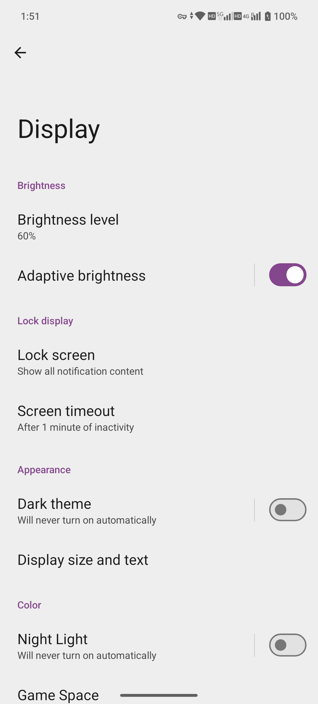
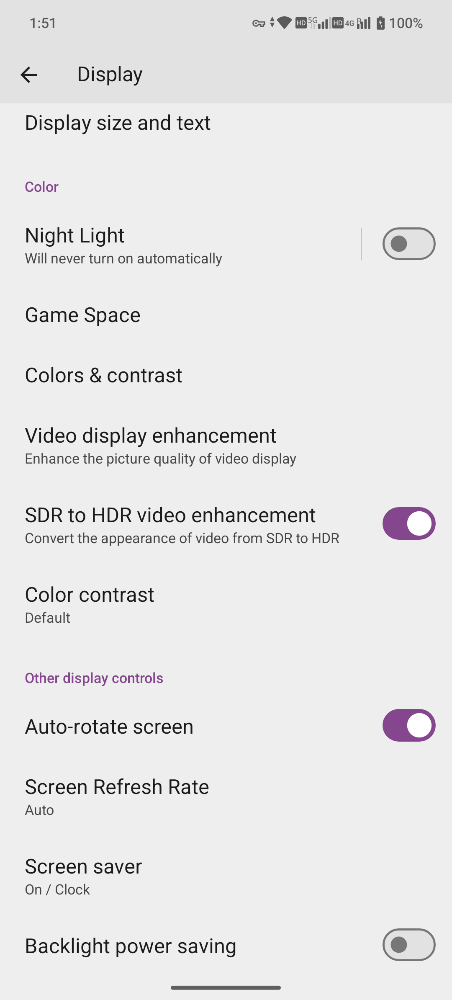

Home screen and everyday use / capture-screen
Screenshots, screen recording and media privacy
Distinguish everyday capture methods from the ADB tools used to produce this guide.
Baseline: MA1 · Android 15 · MAG1WW53. Captured: 2026-10-14. This page is an editorial draft. Steps have not been tested except where explicitly stated.
System screenshot / Quick Settings recording entry (everyday entry points awaiting verification); this review uses ADB
Before you start
- Prepare a page without personal information
- Check whether accounts, notifications, network names or passwords could be exposed
- Do not attempt to bypass capture protection
Steps
- Everyday screenshots: verify supported combinations or gestures in Smart controls and the physical-button instructions. Common Android shortcuts alone are not verified MAG1 instructions.
- Everyday recording: check whether Quick Settings offers Screen record and whether tile editing is required. This entry has not yet been captured.
- Before starting, choose a page without personal content and hide notification displays. Microphone and touch-indicator options depend on the actual prompt.
- Finish using the stop control provided, open the saved file to verify playback, then share a reviewed copy.
- This guide uses authorized ADB screencap / screenrecord. These establish capture capability, not the presence of a Quick Settings recording tile.
- Screenshots and recordings were recaptured from system pages without personal information and contain no black masks. Older images showing a personal device name were removed.
Buttons and options
| Button / option | Purpose and limits |
|---|---|
| Screenshot | A still image of the screen |
| Screen recording | Shows screen changes, not the complete physical action of pressing buttons, tapping a card or connecting a cable |
| Audio | Depends on the recording tool and settings; audio capture through ADB is not guaranteed |
| Protected screens | May restrict capture; protections are not bypassed |
Labels observed on the device
- Brightness
- Brightness level
- Adaptive brightness
- Lock display
- Lock screen
- Screen timeout
- Appearance
- Dark theme
- Display size and text
- Color
- Night Light
- Game Space
- Colors & contrast
- Video display enhancement
- SDR to HDR video enhancement
- Color contrast
- Other display controls
- Auto-rotate screen
- Screen Refresh Rate
- Screen saver
- Backlight power saving
A visible label confirms that an entry or option exists. It does not mean every listed action has been tested.
Expected result and recorded evidence
System screenshots were captured successfully. ADB recording results are established by playable files and inspection records.
Cancel, exit and restore
Stop the recording. Deleting media is a file operation; this review retains only safe copies.
Troubleshooting
- Black screenshot: may indicate app protection; record the limitation
- Video will not play: check that recording ended properly, then check the container and codec
- Storage full: inspect available space first; do not clear user data
Limits and versions
Everyday screenshot and recording entry points await verification. ADB commands must not be presented as ordinary phone menus.
Peer review: pending. Publication status: unpublished.
Screenshots & videos
Re-recorded with touch markers and swipe trails. The native coordinate strip is retained. Markers show ADB-injected touchscreen input, not a filmed finger. Temporary touch-display settings were restored after capture. Recordings have no audio.


White device frame · Original screen capture


White device frame · Original screen capture
White device frame · Original screen recording